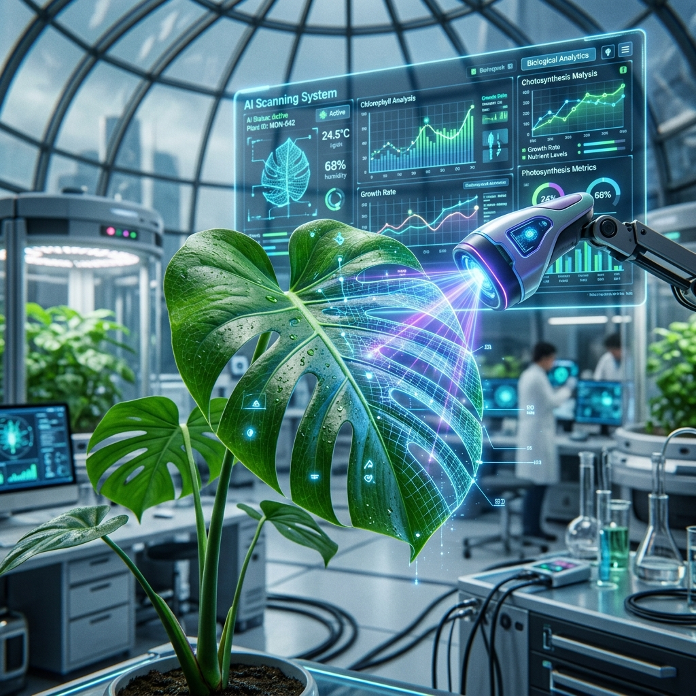
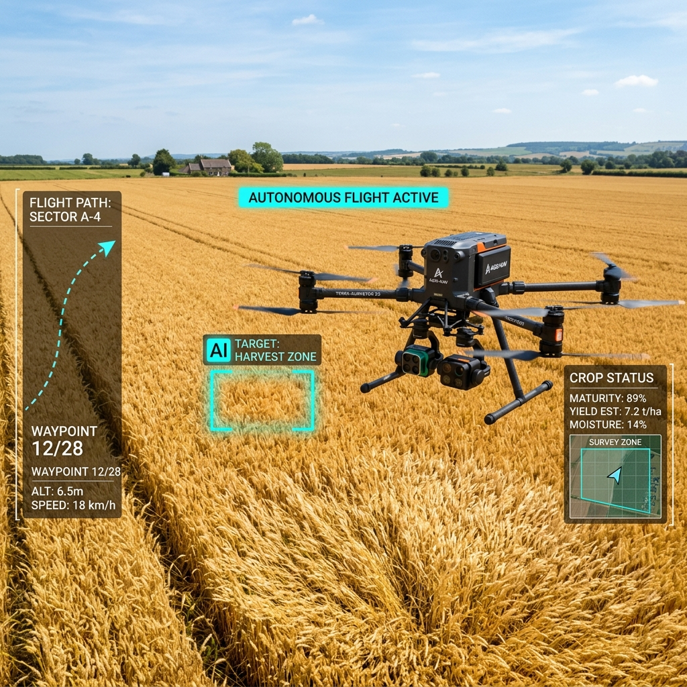

최첨단 AI 알고리즘을 활용한 맞춤형 농업 솔루션
머신러닝을 통해 작물의 생육 상태를 실시간으로 모니터링하고 최적의 환경을 제안합니다.
토양 습도 및 기상 데이터를 분석하여 물과 비료의 사용량을 획기적으로 절감합니다.
AI가 탑재된 자율 주행 트랙터 및 드론을 통해 파종부터 수확까지 전 과정을 자동화합니다.
눈에 보이지 않는 데이터를 가치로 변환합니다

수백만 장의 식물 질병 데이터를 학습한 딥러닝 모델이 잎사귀의 미세한 변화를 감지하여 질병을 조기에 발견합니다. 피해가 확산되기 전에 선제적인 조치를 취할 수 있습니다.

넓은 농경지를 자율 비행하며 다중 분광 카메라로 토양의 상태와 작물의 영양 결핍을 매핑합니다. 필요한 곳에만 정확히 농약을 살포하여 환경 오염을 줄입니다.